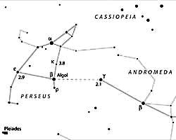

The constellation Perseus has more to offer than a meteor shower in July and August. But this is a meteor column, so I'll set the scene for the fabulous celestial summertime fireworks display first. The Perseids are the most famous of all meteor showers. Most non-astronomers who have seen a meteor have probably seen a Perseid! Makes a lot of sense, though -it's usually warm in July and August, when the general public is likely to accidentally look up and glimpse a falling star!
|  |
The Perseids are active from July 17th thru August 24th. The traditional peak, in reality, the second peak of three, is Saturday, August 12th at 04h UT. It is interesting that there are several peaks. A ZHR of 100 was observed in 1999 and Perseid Y2K ZHR is expected to remain at about that level. Unfortunately there is a bright waxing moon on peak night, or we'd have a darn fine site here in the western US. The tertiary peak will occur at 19H UT on the 12th. But you'll have to take a fast flight to Central Russia or Asia to see it! We'll talk more about this next shower next month. Perseids are fast, bright and leave persistent trains. Their radiant rises from low to the North-east to high in the east as the night wanes.
Another fascinating object is located in Perseus, and it's another object that has a peak of brighness. It's Algol! Beta Perseii is the most famous of the eclipsing variables. At magnitude 2.15, Algol is a white spectral type B8 V main sequence star 100 light years distant. It is a binary, too, of course! At primary eclipse, 79% of the bright star is hidden by the larger companion. It dims significantly from 2.15 to 3.4 every 2.9 days. This eclipse takes place over a very short time frame - less than four hours. The dates (times in UT) to watch for this mimima of are available in Sky and Telescope. They are also printed in the RASC Observers Handbook 2000.
I hope you give Perseus and Algol and the Perseid meteor shower a look-see this summer and fall. Perseus rises from the North at sunset, and will be overhead in December. But a meteor observer, up at 2 or 3 am on a summer night, will find our hero Perseus high in the summer sky.